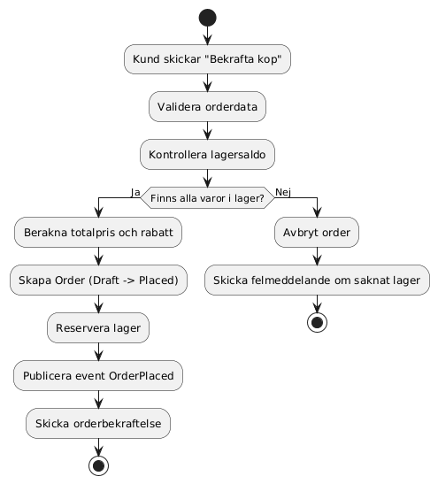
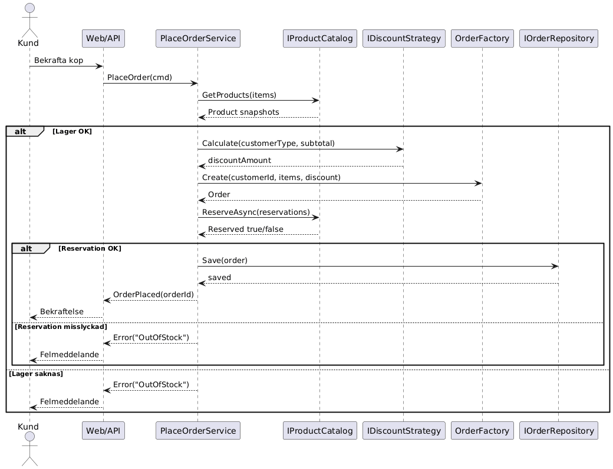

# Objektorienterad analys och design
GitHub repo: https://github.com/hassan-jawdat/uppgift.Objektorienterad
1. Kundscenario
System: Order- och lagerhanteringssystem for en mindre e-handel.
Problemet som ska losas:
- Kunder ska kunna lagga order pa produkter.
- Lagret ska inte oversaljas.
- Administrators ska kunna folja orderstatus.
- Systemet ska vara forandringsbart, t.ex. kunna byta rabattregler utan att skriva om domanlogik.
2. Kravanalys
2.1 Funktionella krav
- Kunden kan skapa en order med en eller flera orderrader.
- Systemet ska validera att varje produkt finns i lager innan order bekraftas.
- Systemet ska kunna tillampa rabattregler per kundtyp.
- Systemet ska satta orderstatus:
Draft, Placed, Cancelled. - Systemet ska lagra order och kunna hamta order via order-id.
- Administrators kan se orderlista och status.
- Systemet ska skapa en domanhandelse nar order laggs.
- Systemet ska kunna reservera lager vid lagd order.
- Kunden ska fa orderbekraftelse efter lyckad laggning.
- Systemet ska kunna neka order om lager saknas.
2.2 Icke-funktionella krav
- Prestanda: 95 procent av
PlaceOrder ska svara under 2 sekunder vid normal last. - Tillganglighet: systemet ska ha minst 99.5 procent tillganglighet per manad.
- Sakerhet: autentisering kravs for adminfunktioner. Endast auktoriserade roller far lasa alla ordrar.
- Integritet/lagkrav: persondata hanteras enligt GDPR (dataminimering, radering pa begaran, loggning av atkomst).
- Sparbarhet: varje orderandring ska kunna foljas via audit-logg.
- Forandringsbarhet: rabattmotor ska kunna byggas ut utan att andra order-aggregatet.
3. Use Cases / User Stories
UC1: Lagga order
- Primar aktor: Kund
- Forvillkor: Kund ar inloggad och har varor i varukorg
- Trigger: Kunden klickar "Bekrafta kop"
- Huvudflode:
- Systemet tar emot orderdata.
- Systemet validerar lager per rad.
- Systemet raknar total med vald rabattstrategi.
- Systemet skapar order och satter status
Placed. - Systemet reserverar lager.
- Systemet sparar order.
- Systemet publicerar
OrderPlaced. - Kunden far bekraftelse.
- Om lager saknas avbryts order.
- Kunden far felmeddelande med saknade artiklar.
UC2: Visa orderstatus
- Primar aktor: Kund
- Forvillkor: Kund ar inloggad
- Huvudflode:
- Kund oppnar "Mina ordrar".
- Systemet hamtar order via repository.
- Systemet visar status och total.
UC3: Admin hanterar order
- Primar aktor: Administrator
- Forvillkor: Admin ar autentiserad med korrekt roll
- Huvudflode:
- Admin oppnar orderoversikt.
- Systemet visar lista med filtrering pa status.
- Admin oppnar vald order.
4. Objektorienterad analys och domanmodell
4.1 Entiteter
Order (Aggregate Root): ansvarar for orderns livscykel och invariants.OrderItem: en orderrad med produkt-id, antal och styckpris.
4.2 Value Objects
Money: belopp + valuta, immutabel.OrderId: starkt typat id.
4.3 Aggregate
- Aggregat:
Order - Regler inom aggregatet: En order maste innehalla minst en orderrad for att kunna laggas.
- Regler inom aggregatet: Endast
Draft far overga till Placed. - Regler inom aggregatet: Endast
Draft eller Placed far overga till Cancelled. - Regler inom aggregatet: Total beraknas via summering av orderrader och rabatt.
4.4 Interfaces
IOrderRepository: abstraherar lagring och listning av ordrar.IDiscountStrategy: abstraherar rabattberakning.IProductCatalog: abstraherar produkt-, lager- och reservationsfunktioner.
5. Systemdesign och arkitektur
Arkitektur: lagerindelad med tydlig separering mellan domanlogik och teknik.
Domain: affarsregler, entiteter, value objects, domanhandelser.Domain: inga beroenden till databas eller UI.Application: use-case tjanster (exempel: PlaceOrderService, QueryOrdersService).Application: orkestrerar domanobjekt och interfaces.Infrastructure: implementerar repository och externa integrationer.Infrastructure: exempel InMemoryOrderRepository.Presentation (utanforscope i kodexempel): API eller UI som anropar application-lagret.
Varfor detta val:
- Haller affarslogik testbar och isolerad.
- Minskar koppling mellan doman och teknikval.
- Gor det enklare att byta datakalla eller UI utan att andra domanregler.
6. Designmonster och designprinciper
6.1 Strategy
- Monster:
IDiscountStrategy med implementationer som NoDiscountStrategy och LoyalCustomerDiscountStrategy. - Motiv: nya rabattregler kan laggas till utan att andra
Order.
6.2 Factory
- Monster:
OrderFactory. - Motiv: centraliserar skapande av giltig
Order och minskar duplicering i use-case kod.
6.3 Repository
- Monster:
IOrderRepository + infrastrukturimplementation. - Motiv: doman och application slipper direkt databaskoppling.
6.4 Domain Event (Observer-liknande)
- Monster:
OrderPlaced event fran Order. - Motiv: los koppling mellan orderflode och sidofunktioner (notifiering, statistik, integrationer).
6.5 SOLID-principer
- SRP:
Order hanterar orderregler, repository hanterar persistens och sokning. - OCP: nya rabattstrategier kan adderas utan andring i befintlig logik.
- DIP: application beror pa interfaces (
IOrderRepository, IProductCatalog).
7. UML
PlantUML-filer:
docs/uml/aktivitetsdiagram_orderflode.pumldocs/uml/sekvensdiagram_lagg_order.puml
8. Kodexempel
Kodexempel finns under src/ och fokuserar pa design, inte komplett korbart system.
src/Domain/Orders/Order.cssrc/Domain/Pricing/IDiscountStrategy.cssrc/Application/PlaceOrder/PlaceOrderService.cssrc/Application/QueryOrders/QueryOrdersService.cssrc/Infrastructure/Persistence/InMemoryOrderRepository.cs
9. Mapping mellan krav och design
- Krav 1: hanteras i
Order + OrderFactory (giltig order med orderrader). - Krav 2 och 10: hanteras i
PlaceOrderService via lagerkontroll och avslag vid lagerbrist. - Krav 3: hanteras av Strategy-monstret (
IDiscountStrategy). - Krav 4: hanteras i
Order via statusovergangar Draft -> Placed och Draft/Placed -> Cancelled. - Krav 5: hanteras av
IOrderRepository (SaveAsync, GetByIdAsync). - Krav 6: hanteras av
IOrderRepository.ListByStatusAsync och QueryOrdersService. - Krav 7: hanteras med domanhandelsen
OrderPlaced i Order.Place(). - Krav 8: hanteras av
IProductCatalog.ReserveAsync i PlaceOrderService. - Krav 9: hanteras av resultatet fran
PlaceOrderService (Success + OrderId).
Bilaga: UML-diagram

